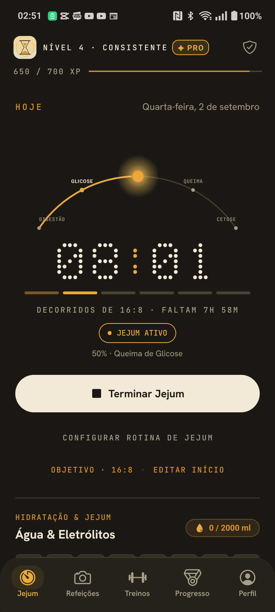
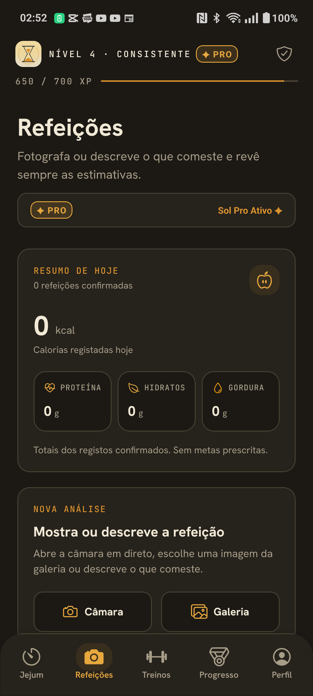
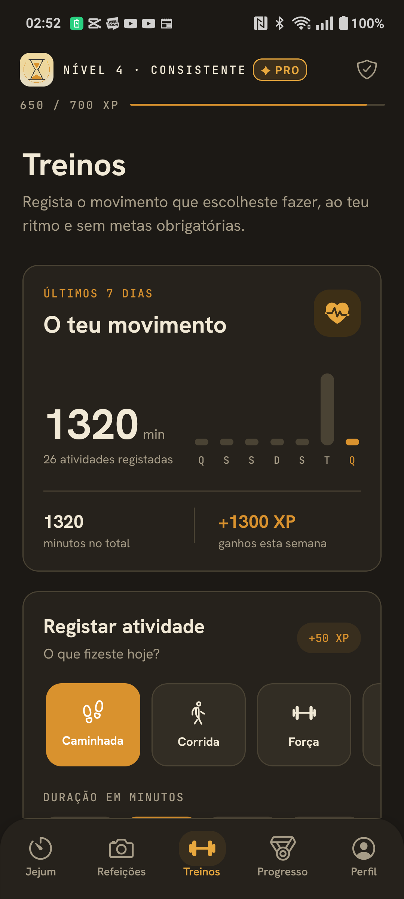
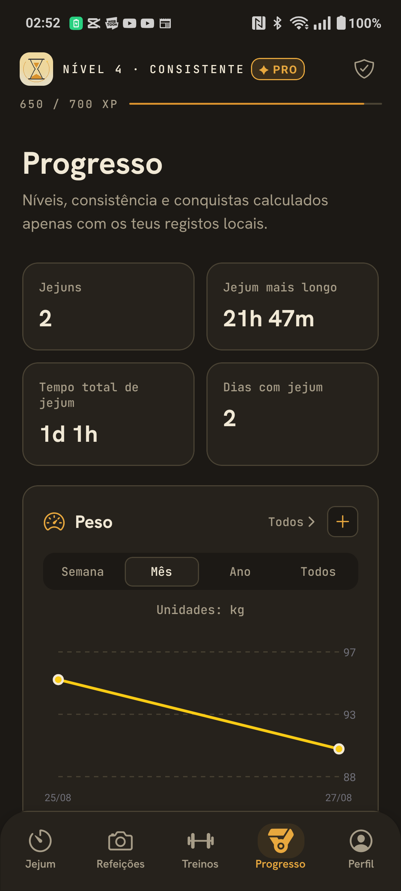
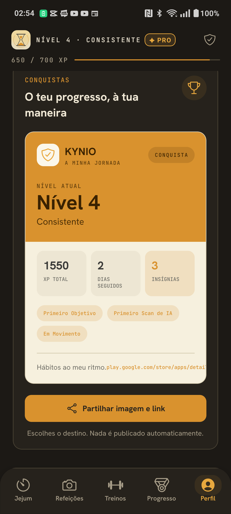

0h
Digestão
A glicose da última refeição ainda está em circulação. O corpo usa-a primeiro.
Beta fechada · Google Play
Acompanha quando o teu corpo entra em queima de gordura, cetose e autofagia celular. Fotografa o prato para rever estimativas de calorias e macronutrientes. 100% privado, na SQLite local do teu telemóvel.





O teu corpo, em tempo real
O KYNIO traduz literatura biológica num temporizador vivo — sabe exatamente onde estás no jejum, sem adivinhar.
08:23:41
Queima de Gordura
8h 23m decorridos · 7h 36m restantes
0h
A glicose da última refeição ainda está em circulação. O corpo usa-a primeiro.
4h
Os níveis de insulina descem. O glicogénio do fígado torna-se a fonte principal.
12h
O interruptor metabólico: a gordura armazenada passa a ser o combustível.
16h
Os corpos cetónicos alimentam o cérebro. Clareza mental e energia estável.
24h
A limpeza celular profunda: reciclagem de componentes danificados.
Funcionalidades
Uma ferramenta pessoal desenvolvida para manter a tua consistência diária de forma simples e intuitiva.
Acompanha a transição entre Digestão, Queima de Gordura, Cetose e Autofagia Celular com base em literatura biológica.
02Tira uma foto ao teu prato para estimar instantaneamente calorias e macronutrientes — proteína, hidratos e gorduras.
03Controlo prático de hidratação diária com atalhos de copos e orientações saudáveis para o jejum.
04Os teus registos ficam guardados no teu dispositivo, numa SQLite privada. Sem anúncios e sem rastreio invasivo.
Ecrãs da app
arrasta para explorar →
Beta fechada no Google Play
Acede à versão oficial de teste fechado na Google Play Store. Dois passos e estás dentro.
Acesso à Beta do Android
Autoriza a tua conta Google para ter acesso à versão de teste na Play Store.
Entrar no Grupo GoogleAbre o link oficial e instala o KYNIO no teu Android.
Abrir na Google Play Store